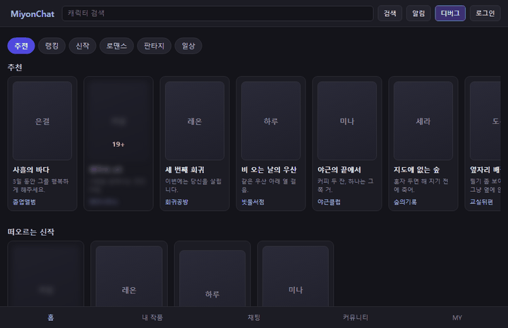

미연시 AI 챗 서비스를 역분석해 기능 골격을 세우고, 그 골격을 검증할 SUT를 직접 만든 뒤, TC를 설계해 자동화하고 결함을 일부러 심어 탐지력까지 확인한 프로젝트입니다. 이 문서는 그 단계와 산출물이 어디 있는지를 한 장에 모은 지도입니다.

검증 대상을 직접 만들었습니다 — 게이팅 한 갈래를 처음부터 끝까지. 이 GIF도 스크립트로 다시 만듭니다
앞 단계의 산출물이 뒤 단계의 입력이자 기대값의 출처입니다. 건너뛰면 뒤 단계가 근거 없이 만들어집니다 — 예를 들어 골격 없이 TC를 쓰면 「무엇을 다 봤는가」를 대조할 기준이 사라집니다.
위 파이프라인이 무엇을 거치는가라면, 여기는 무엇을 근거로 판정하는가입니다. 저장소 구조도에서 각각 spec/↔test-case/ 구간과 automation/ 안쪽을 확대한 그림입니다.
기준선 셋을 정본에서 읽어 오고, TC가 신고한 좌표와 맞춰 덮이지 않은 것을 목록으로 냅니다. 그 목록이 빌 때까지가 TC 설계입니다.
일부러 만든 고장을 하나씩 켜고 같은 스위트를 다시 돌려 담당 TC만 깨지는지 봅니다. 커버리지가 증명하지 못하는 것을 이쪽이 맡습니다.
테스트끼리 간섭하면 통과도 실패도 근거가 되지 않습니다. 시작점을 같게 만드는 일과 기다리는 방식이 그 근거를 지킵니다.
작업을 이어받을 때는 change-log와 remaining-work를 먼저 읽습니다. 그 둘이 「지금 어디까지 왔고 다음이 무엇인가」의 정본입니다.
| 폴더 | 무엇이 있나 | 지위 |
|---|---|---|
analysis/ | 역분석 조사 기록 — 행동 인벤토리 3종 + 공통 트리 | 조사 자료 (TC 기대값 출처 아님) |
reference/ | 조사에서 채택한 기능 목록 | 판단 기록 |
spec/ | 기능 골격 · design 명세 · SUT 설계(청사진·결함 주입·mock·세이브 스키마) | 정본 |
spec/rationale/ | 왜 이렇게 정했나 — 추가·SUT 설계의 근거 | 근거 기록 (기대값 출처 아님) |
spec/archive/ | 골격 변경 이력 | 기본 참조 금지 — 행방을 물을 때만 |
sut/ | 검증 대상 (단일 HTML + JS) | 구현 |
test-case/ | TC 입력 · 제외 사유 · 이슈 · xlsx | 정본은 json, xlsx는 파생 |
automation/ | 테스트 · 매트릭스 기대표 · 실행 결과 · 리포트 | 리포트·매트릭스 결과는 파생 |
| 파생물 | 정본 | 만드는 도구 |
|---|---|---|
qa-lab-miyonchat-feature-tree.html | qa-lab-miyonchat-feature-tree.md | gen_feature_tree_html.py |
qa-lab-miyonchat-tc-v1.0.xlsx | qa-lab-miyonchat-tc-input-v1.0.json | build_tc_template_xlsx.py |
result/matrix/fault-matrix.md | 테스트 실행 + qa-lab-miyonchat-fault-matrix.json | run_fault_matrix.py |
report/qa-lab-miyonchat-report.html | 위의 정본 전부 | gen_qa_report_html.py |
index.html (이 문서) | 위의 정본 전부 | gen_project_hub_html.py |
| 축 | 값 | 뜻 |
|---|---|---|
| 기능 단위 | 86 | 골격에서 구현 범위로 확정된 검증 단위 |
| 화면 요소 | 258 | 청사진에 등재된 조작 가능한 요소(testid) |
| TC | 153 | 결정적 111 · 금칙 39 · 확률적 2 · 루브릭 1 |
| 사람 전용 TC | 1 | 자동화가 판정 기준을 세울 수 없는 것 — 루브릭 채점 |
| 검증 제외 | 7 | 누락이 아니라 판단. 사유와 근거를 기계가 확인 |
| 검출 이슈 | 3 | TC를 수행하다 나온 것 |
진행하다 막힌 자리에서 나온 것들입니다. 프로젝트 안에 묻어 두면 다음 프로젝트가 같은 자리에서 다시 막히므로, 워크스페이스 규칙(project-process/rules/)으로 올렸습니다.
뎁스 마지막 칸은 요약이 아닙니다. 「무엇을 보는가」를 적으면 기대 결과와 중복되고, 값이 행마다 달라 뎁스 색이 묶음이 아니라 소음이 됩니다.